Part 3 of my 5-Week Asia trip! Check out what I packed here. Posts for my Thailand, Taiwan, and Korea complete this series!
Japan is a great destination for all levels of travelers despite the language barrier. It’s also one of the safest countries in the world and boasts one of the best transportation systems I’ve ever experienced. In this post, I’ll cover some of the destinations we had fun visiting. I recently wrote up a Google Doc of Japan tips for some of my friends. It has some useful cheat-sheet-style information that might help you when you’re there (i.e. useful phrases). Like Taiwan, this is our second time visiting Japan so I will be including points of interest from both trips in this post.
Jump to specific sections: Basics, Tokyo, Kansai Area, Hakone, Wakayama
If you know me at all, you know about my love for Japanese culture. My grandpa was a schoolboy in Taiwan during Japanese occupation, and somehow he fell in love with their culture and passed those feelings onto my mother as she was growing up. I would guess that that’s the reason I grew up consuming anime, manga, and various Japanese dishes. As I got older, my fascination with Japan grew despite never visiting the country until 2017. It was even more fascinating that I thought it’d be with cute cafes, convenience stores, and Book-Offs.
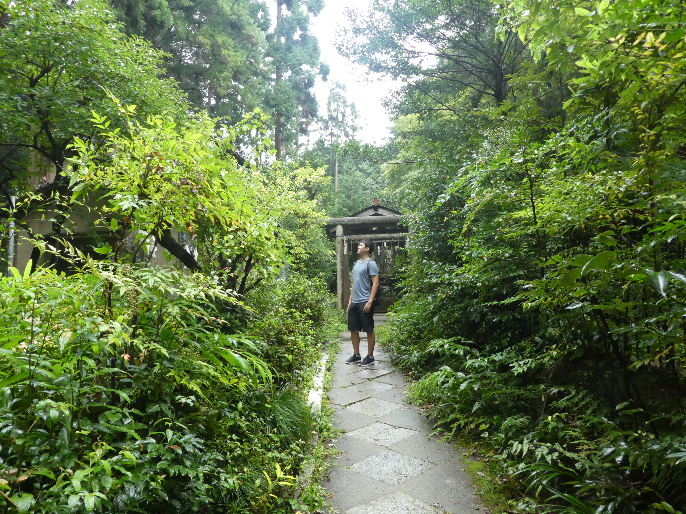Basics
English
Everyone asks me something along the lines of, “I can’t speak Japanese, how will I get around?”. If you’re heading to a big city and visiting popular tourist spots, don’t even worry about the language barrier. Those places often have signs and guidebooks in English. Staff at JR stations can often speak a little English as a result of tourism. That being said, it never hurts to learn useful phrases before you go and write them in you phone or a notepad.
Weather
In 2017, we visited in mid September, which was still quite warm and humid. Remember to bring mosquito repellent spray/wipes/bracelets so that you don’t get eaten up by these summer pesks. This time, we arrived around mid-October. The weather was definitely cooler, more like SoCal autumn days, and a light jacket was much appreciated.
Transportation
From bullet trains that can go across the country to local subways and buses within each city, there’s plenty of great transportation options in Japan that are way more affordable and efficient than renting a car. Renting a bike is also a good option in less bustling cities.
- Suica Card: This is a train card that you load with money and tap at the gates in the subway. They are different brands, but I like Suica because it’s one that can be used not just in Tokyo. The card itself costs 500yen, but it never expires. You can even have it print your name on it. Suica cards can be reloaded at the machines in every train station (the machines can display English) and can be used to pay for items at convenience stores and select other stores.
- JR Pass: You’ve probably heard of this one. If you go from Tokyo → Kyoto → Tokyo and maybe stop somewhere in between like Mt. Fuji or Hakone, the JR Pass is completely worth it. Otherwise, you’re better off buying city bus or subway passes. Fun facts:
- Only foreigners can buy a JR Pass and until recently, you had to order it in advance online. Now, you can buy it from JR stations in Japan or Narita/Haneda/Kansai Airport, though it will be more costly. The passes are valid for 7, 14, 21 consecutive days from the day you activate it.
- Also read: Is the JR Pass Worth It??????
- The pass only covers JR trains and buses, not Tokyo metro or local buses. If you use Google Maps for navigation, it will denote the train company.
- To use the pass, you have to show it to the human at the ticket window. You can’t use the ticket gates (unless you bought a shinkansen ticket to which you will use the gate).
- Shinkansen (bullet trains): You’ll take these for longer trips across the country. The JR Pass covers some shinkansen companies but not all. Nozomi and Mizuho trains (which are the fastest ones) aren’t compatible with the JR pass, but the Hikari trains are. Book these in advance at the JR stations if you can. You’ll have to show your JR pass and passport.
- Discounts! The JR pass can get you discounted admission fees at certain places so take advantage of them! (I.e. Osaka Castle)
- City Passes: For some cities around Kyoto, buses might be more convenient and available than JR and subway stations. Normally, you can buy a day pass that gives you unlimited access to the buses in that city/region. It’s useful if you’re going to lots of places that aren’t near train or JR stations.
Money
Japan is very much still a cash society. Carry cash and bring a coin purse (you’re welcome). You can exchange your cash at the airport. The rates have always been pretty good in my experience but feel free to double check with Google.
Big stores (i.e. Forever21, Uniqlo, Muji), department stores, and convenience stores accept certain credit cards, Visa being the most common. Before you go to Japan, check if your credit cards incur foreign transaction fees. Some banks will let you avoid those fees if you notify them in advance that you’ll be abroad. At the store, the credit card machine will ask if you want to pay in yen or your home currency. Since yen is weaker than USD, I opted to pay in yen since it’s slightly cheaper and I avoid the small currency exchange fee (which is so small that I wouldn’t worry about it if you accidentally incur it).
Food
Japan has a reputation for being expensive, especially in the food department. I’ll be straight with you. As a person who grew up in Southern California, prices in Japan are similar, if not slightly cheaper than America in terms of eating out. However, Japan almost always wins on quality for what you pay for. Yes, produce is expensive, but cooking traditional Japanese food isn’t too bad. We booked Airbnbs with kitchens so we could cook our own food at least once a day. If you’re smart avoid tourist-y areas and high end Kaiseki restaurants, staying on budget is more than doable.
A note on food restriction: Most Japanese eateries don’t do substitutions or modifications. This is slowly changing with the new generation but it’s not very common. This may be a slight annoyance but if you’re willing to be flexible or more careful, don’t let this deter you from eating the great food Japan has to offer.
Here’s some eateries to check out that won’t break the bank and are where many locals eat:
- Konbini (convenience stores): The most popular chains are 7-11, Family Mart, and Lawsons and they’re pretty much everywhere. They’ve got daily essentials including disposable underwear, shower things, snacks, makeup, alcohol, drinks, coffee, etc. There’s riceballs for days as well as freshly made bentos. If you go later at night, some refrigerated items will be discounted!
- Supermarkets: They sell similar food items to konbinis but with a much wider selection of fresh fruits and veggies, drinks, bentos, etc. Prices vary by city and district, but on a whole I found supermarkets to be a little cheaper than konbinis since they have sales and end-of-the-day discounts. Fruit is hella expensive, so I only got bananas.
- Revolving Sushi: Not the highest quality sushi, but it’s still pretty solid and cheaper than fancy sushi places. You order what you want on a touchscreen and the belt will slide your food to you when it’s ready.
- Ramen Shops: Ramen is fairly common to find, affordable, and I assume it’s pretty good. I’m pescatarian, so I haven’t gone to a traditional ramen store in Japan. I’ve been told that Ichiran is a great option. If you poke around the interwebs, you can find places that offer vegan ramen options.
- Noodle Shops (soba/udon): These are my favorite places to eat because you get really good food for a cheap price. A lot of business people and students eat here for lunch and there’s a bunch of options. You usually order and pay on a machine which will print a ticket for you to give the cooks.
- Malls: Mall food courts offer a variety of restaurants and most offer lunch deal sets. I would say 90% mall eateries have an English menu.
- Japanese fast food chains: Sukiya, Matsuya, and Yoshinoya (way better than the U.S.) offer affordable set meals of different rice bowls (I.e. gyudon, oyakodon, katudon, grilled fish).
Jump to specific sections: Top, Tokyo, Kansai Area, Hakone, Wakayama
Tokyo
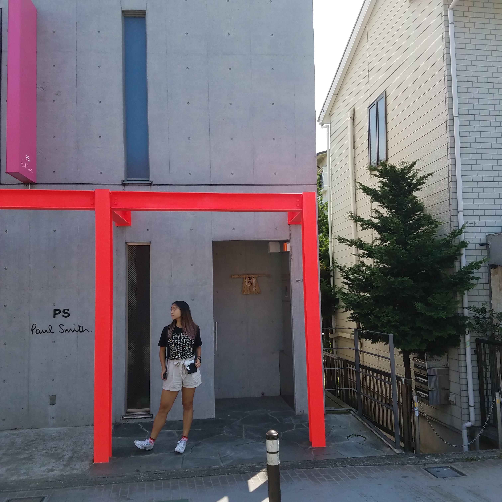Everyone’s first stop: the bustling, energetic capital of Japan. There are so many things to see, eat, and do in and around Tokyo. It is understandably more tourist-heavy around the more popular attractions like Shibuya Crossing, Ueno Park, Tokyo Skytree, etc. We didn’t hit up too many famous spots but I know about them from friends. There’s a lot of aesthetic places to take Instagram-worthy photos like teamLab Borderless in Odaiba. Other fun experiences like the Robot Cafe, Maid Cafes, and the Ghibli Museum are popular as well! I encourage you, if you have the time, to just take the train to a smaller city around or near Tokyo and just explore. It might give you a different perspective of Japan that’s a bit more removed from all the tourism, and who knows what you’ll find.
Accomodation
One night, we stayed at a capsule hotel in Shinjuku. It was very clean and provided everything we needed for the night: pajamas, shower products, face lotion, toothbrushes, and a bed space with a television and outlets. We booked it online in advance, but it seems that most capsule hotels can be rented on a walk-in basis since it’s a commuter/short term place to stay. I think it was around $26-30 a night for the one we stayed at!
The rest of the nights we stayed at Airbnbs (2017, 2018). Many apartments in Tokyo are small studios due to the crowdedness of the city. Just be prepared for that if you do decide to go for a private apartment over a rented room.
Transportation
The Tokyo Subway ticket gives you unlimited use of all subway lines (Toei and Tokyo Metro) in Tokyo for 24, 48, or 72 hours. They aren’t on JR trains. The pass is sold at Narita Airport, Haneda Airport, ticket offices at some major subway stations, and selected Bic Camera and Yamada Denki electronic stores in central Tokyo. Only foreigners can buy these tickets (passport required) but they’re a great option if you’re mainly traveling all over Tokyo.
Food
My aim with this section is to recommend a variety of Japanese cuisine that isn’t limited to sushi and ramen. Maybe you haven’t heard of some of these dishes, but I encourage you to try them out. I don’t think you’ll be disappointed!
- Komeraku Lumine East Shinjuku: If you’ve never tried ochazuke, here’s you chance! It’s a rice bowl topped with protein and veggies and you pour a delicious tea broth over it. To garnish, there are seaweed flakes and tempura flakes! It’s an underrated dish but very cozy and nutritious.
- D47 Shokudo: A A teishoku (set-menu) restaurant at the top of a giant mall in Shibuya. This is a little on the higher-end but not too expensive. The dishes are creative and fresh. They accidentally messed up my order so we got to try a silken tofu side dish. And while the salad was very aesthetic, I wouldn’t order it again. Asia never makes salads quite the same way was America. On the same floor, there’s also the d47 art museum which holds some interesting pieces and studio spaces.
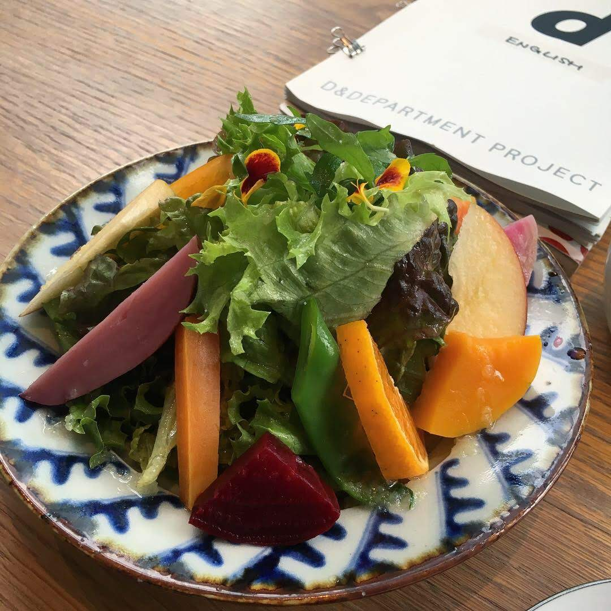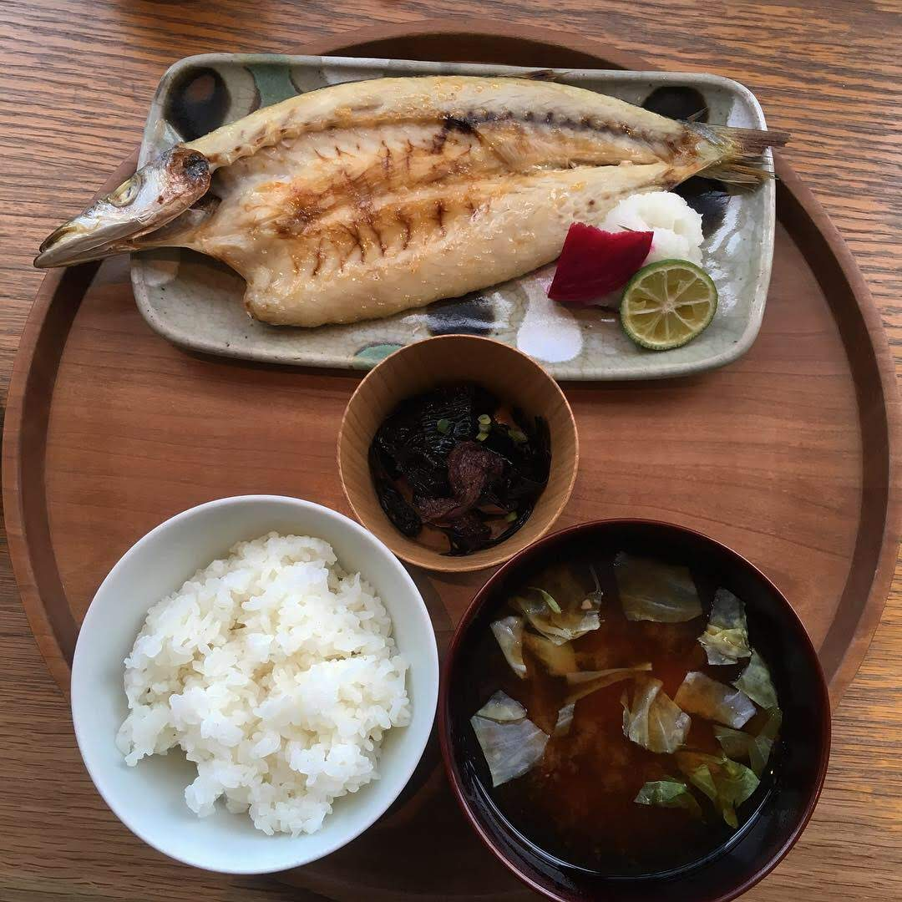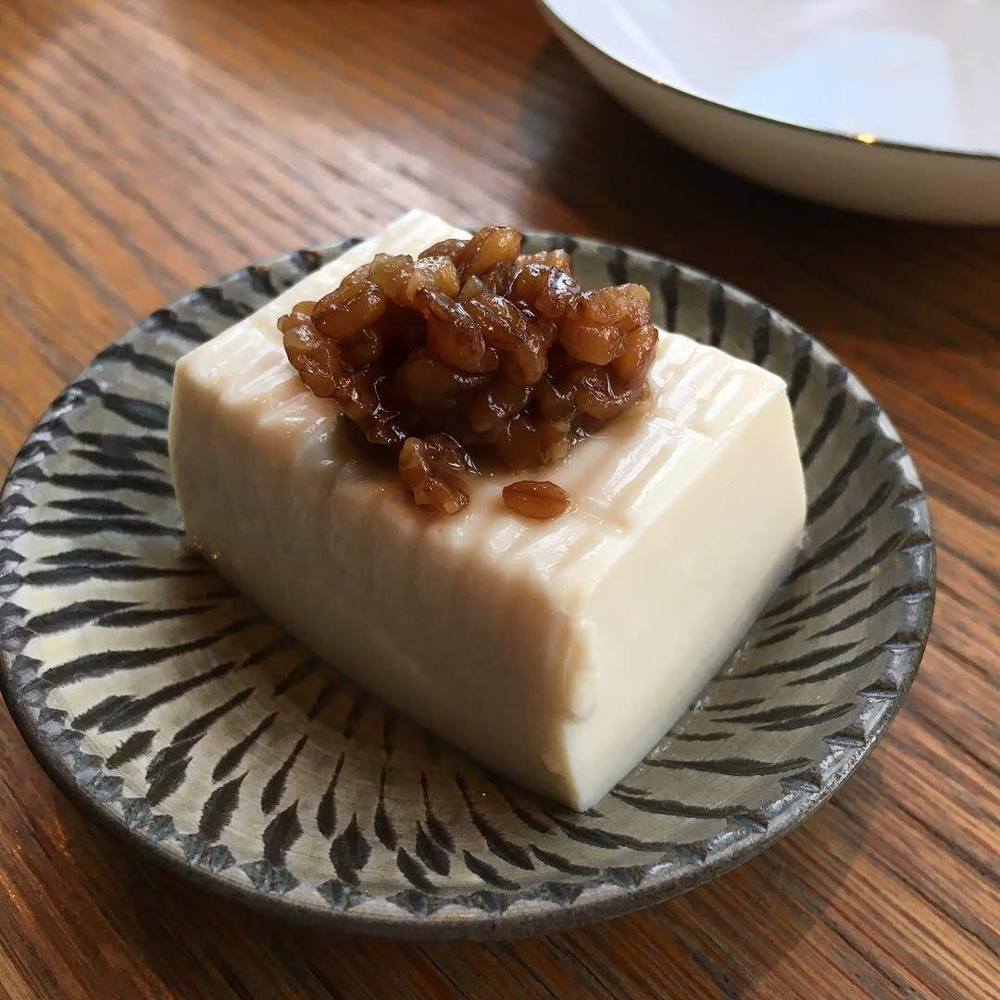
- Rojiura Curry Samurai: A fancier curry place than Coco Ichibanya (no shade, that place is great too). There are vegan options as well as omnivore options for their fresh curries. The food presentation is goals.
- Mister Donut: Japanese donuts beat Krispy Kreme hands down in terms of cuteness. Pop in for a sweet treat and try a pons-de-ring donut. It’s essentially a mochi donut, which is one that I have yet to find in America.
- Hiroshima Fuokonomiyaki Asuka: Although Osaka is known for okonomiyaki, we found this hidden basement shop in Tokyo! You venture down a shady, narrow staircase to find a modern okonomiyaki place. They cook it for you and it’s so tasty.
- T’s Tan Tan: An all-vegan ramen place located deep in Tokyo Station. If you can’t have traditional ramen, rest easy knowing that there’s a great, affordable option for you! It’s not that easy to find since it’s so far in the station and there are many other stores around. We ended asking several store employees for directions and eventually found it.
- Harajuku Crepes: Okay, they are a little overrated but it’s worth getting at least once. These crepes are cute and full of fruit and sweet cream. Depending how crazy you get with the add-ins, the crepe can range from 380yen to over 600yen.
- Tsukijishokudo Genchan: An izakaya with an English menu! We didn’t go there for drinks and side dishes but we enjoyed a tasty set dinner from here. The only con was the smell of cigarette smoke everywhere as smoking is allowed in izakayas.
Fun Places
To be fair, a lot of fun stuff on the list here includes places to buy cool Japanese souvenirs, mostly for myself because I have a mild shopping problem. In the train stations, you can tourism guides (in English!) that includes spots from various districts in Tokyo. They’ll suggest sights and food with little blurbs. I found quite a few recommendations that aren’t talked about very much, which means less crowds!
- Cup Ramen Museum: Located in beautiful Yokohama, this is a fun place to learn about your childhood and college staple. Besides walls lined with cup noodle varieties through the years and interesting ramen sculptures, you can also create a custom cup ramen. You get to design the cup and choose the flavors and toppings. The meal is then sealed for you to take home and consume (within a month). I washed the cup after I ate the contents to keep it!
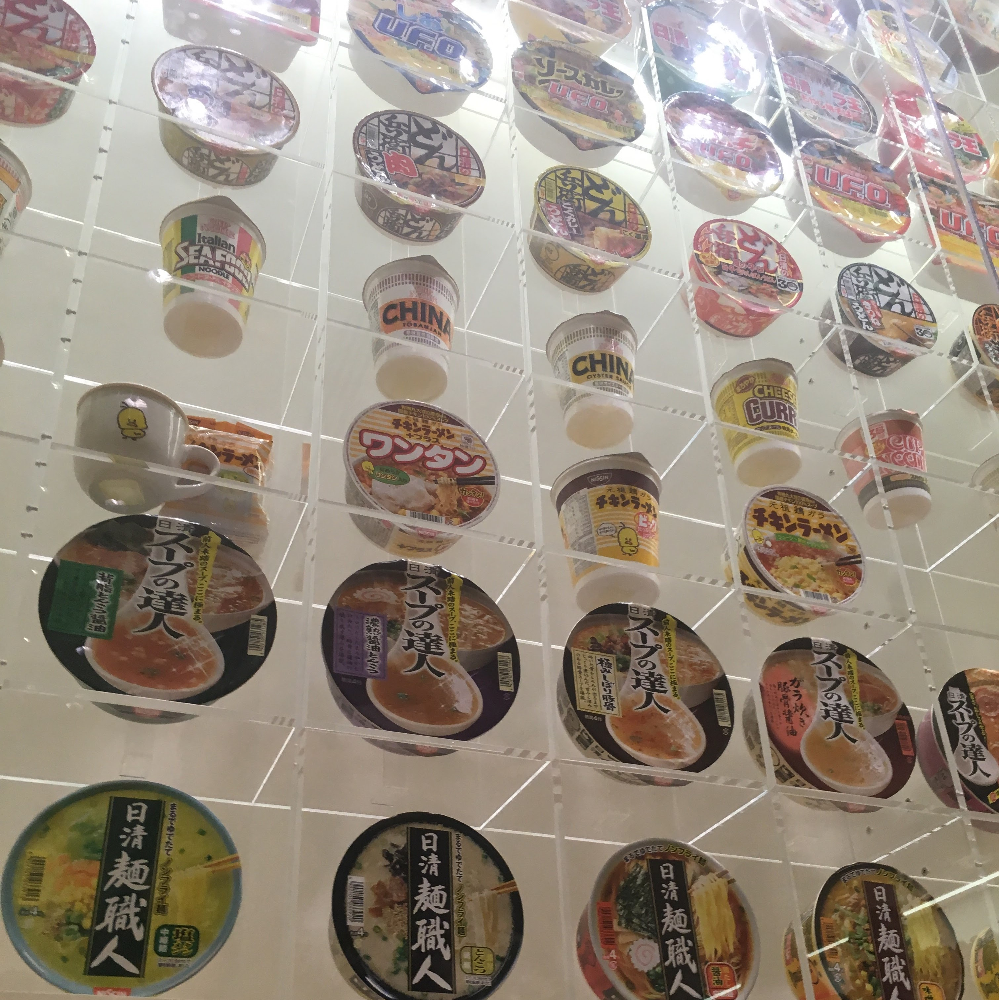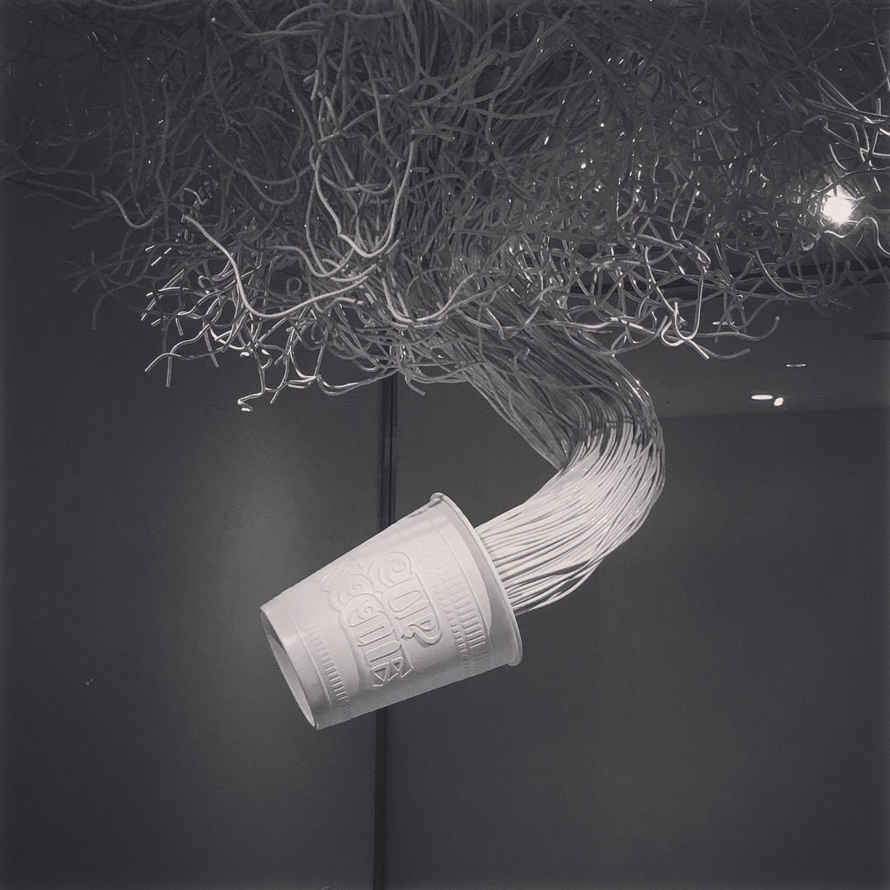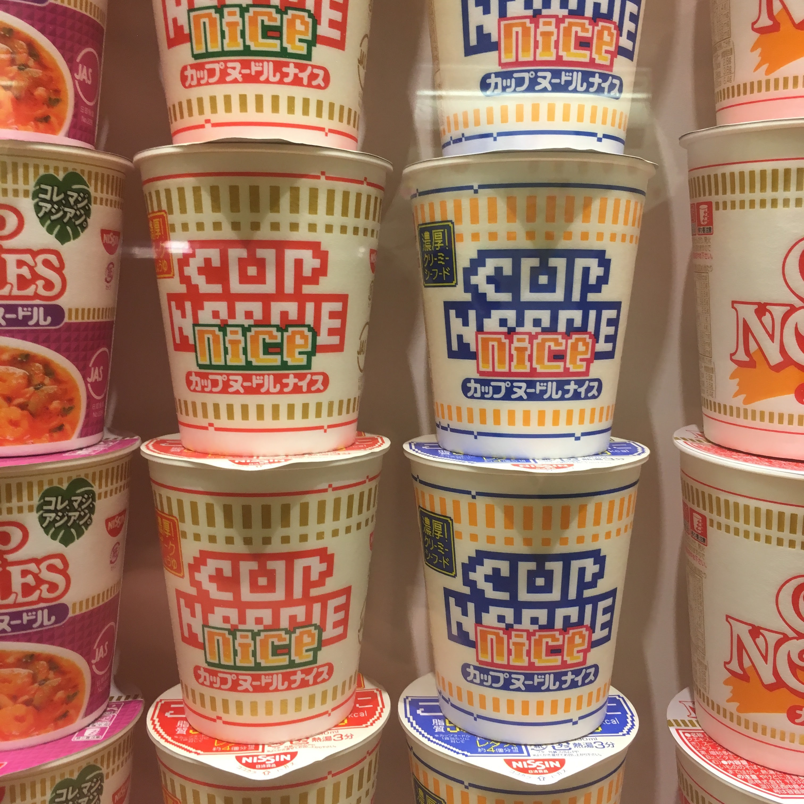
- Mandrake: A multistory anime/manga store in Akihabara. They sell doujinshis from a variety of genres as well as figurines and whatnot. Admittedly bought a couple doujins from here. Heh.
- Koenji Look Street: A cute street full of vintage and secondhand stores. It’s right between Koenji and Shin-Koenji station (only one of them was covered by the Tokyo Metro Pass). When I went, it wasn’t very crowded and there were also plenty of hair salons and fresh produce stands. I walked away with some mandarins and a cute shirt.
- Muji Flagship Store: Muji isn’t big in America yet, but they’re a staple store in Asia. I love their stationary items and their aesthetic. They kind of combine Uniqlo and Ikea and sell items from clothing to furniture to food. I’ve gotten pens, pocket notebooks, and clothing from here. Their products are clean and good quality, and I always buy way too many things from here.
- Mega Don Quixote: Best place to get souvenirs or just Japanese products in general. They sell everything like snacks, beauty, bath, cosplay items, plushies, electronics, novelty men’s underwear, and adult things. Prices aren’t marked up and you can honestly spend hours in this multi-story store.
- Takeshita Street: The cute shopping area of Harajuku! I’ve found that the stores here can either be too expensive or very affordable. While you’re there, also pop into a cafe or try a street crepe.
Jump to specific sections: Top, Basics, Kansai Area, Hakone, Wakayama
Kansai Area (Kyoto, Nara, Osaka)
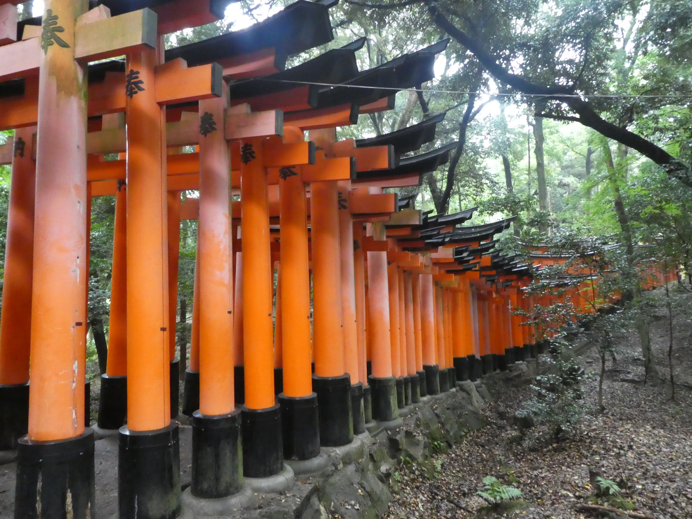Kansai is gorgeous, especially Kyoto. The energy is also mellower than that of Tokyo. It’s more spacious and the traditional style buildings offer a nice touch and contribute to pretty pictures. There are temples a-plenty and several places where you can rent a yukata or kimono. Due to the weather, I decided against that haha.
Accomodation
We stayed at an Airbnb in Takatsuki, which has easy access to Kyoto, Nara, and Osaka by train. This was one of the few times I chose a place where it’s a private room and I’m glad I did! Keisuke and his wife are the sweetest people. They picked us up from the train station, took us to a public bath, and had dinner with us at a revolving sushi place. The two of them have a pretty high level of English conversation skill, and were able to give us tips about going to different touristy areas. The Airbnb was super clean and pleasant to stay at!
Transportation
The first time we went to Kansai, we used the JR pass to visit the big cities in the area. We did have to supplement with some buses since the JR trains didn’t offer convenient transportation within the city. With the amount we used the pass, though, it made it worth it. The second time, we purchased day city passes and a regional JR pass. The latter is a bit tricky to navigate since there’s so many exceptions, but do you research. The maps are all on the JR website.
Food
- Nishiki Market: A long alley full of tasty street food. It is claustrophobic in there, but you can eat awesome stuff like salmon on a stick, a variety of fishcakes, thick soymilk, and more! There’s also plenty of souvenir shops all around. I would say this place is similar to the Jiufen shopping alley in Taipei.
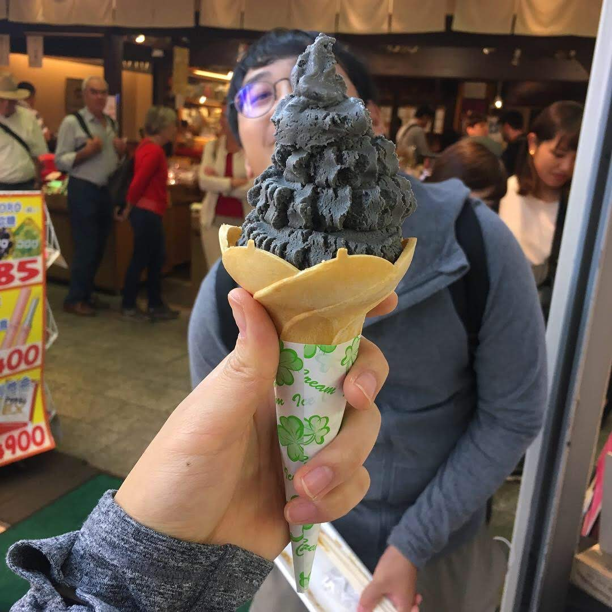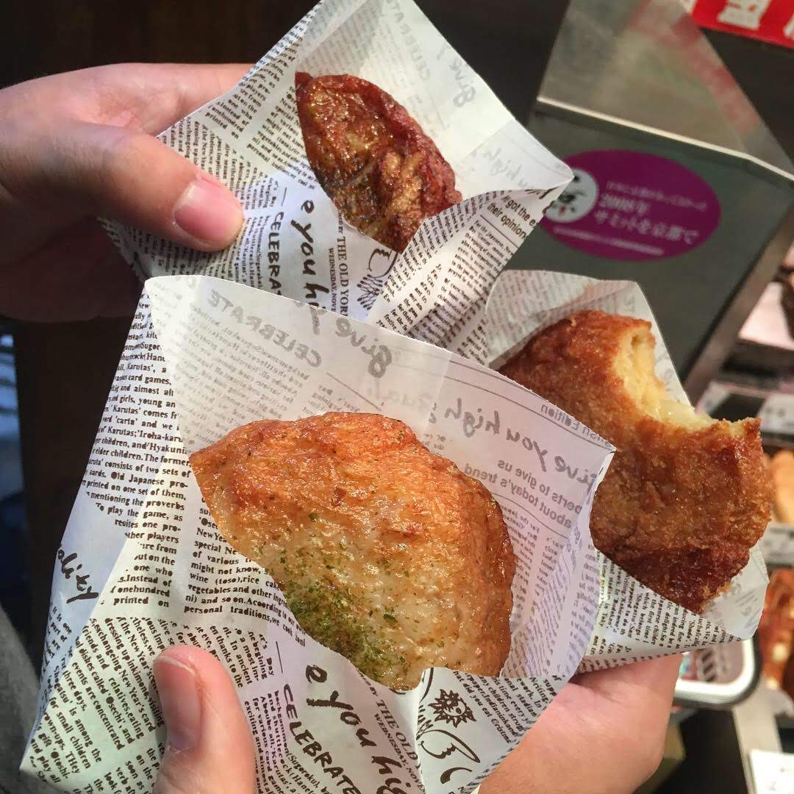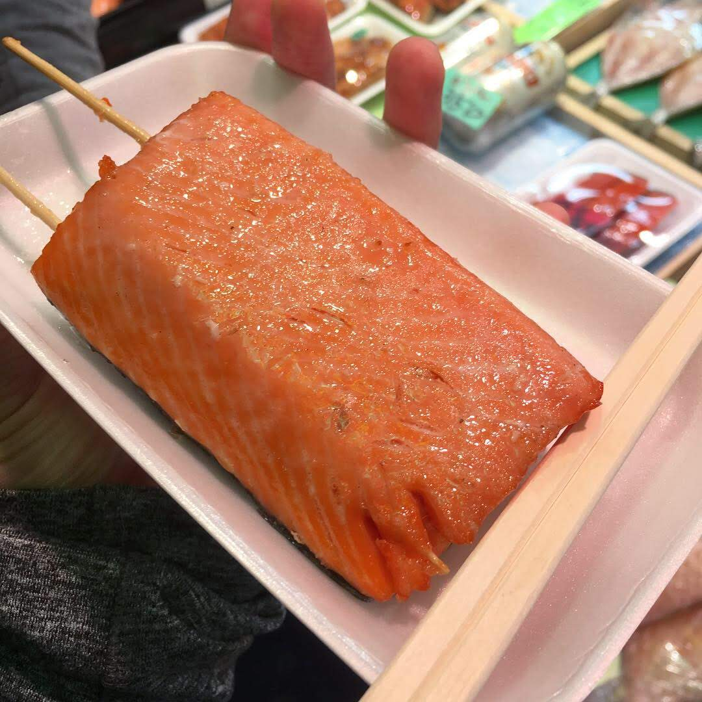
- Miyako Yasai Kamo: An inexpensive lunch buffet that uses freshly farmed vegetables. Most of the dishes are vegan/vegetarian and each dish is marked with what allergens is contained. I wish we had more time in Kyoto, because I would go back again!
- Okonomiyaki: You’ll probably see more of these places in the Kansai Area (Osaka, especially). They’re savory pancakes that are usually under $10 and good to have with beer and stuff. The pancake consists of shredded cabbage and meat/seafood, and is topped with okonomiyaki sauce, Japanese mayonnaise, seaweed flakes, and bonito flakes. Hiroshima-style will also include yakisoba. Some places will cook it for you and others will let you cook it yourself! They are fairly inexpensive and a tasty meal.
- Green Tea Soba: Cold soba (or udon) helps cool you down on hot, summer days. A specialty in Kyoto is green tea soba, which is buckwheat noodles infused with green tea. It usually comes with a dashi (fish-based) broth and toppings like assorted tempura. I can't recall the exact one we went to but there are plenty throughout Kyoto.
Fun Places
- Fushimi-Inari Shrine: A lot of people don’t know the name of this place, but immediately recognize it when they see pictures. It’s the stairs that go up a mountain and are encased in a tunnel of torii gates. I’d recommend going early to beat the heat and the crowd. You can dress cute, but with the stairs and humidity, you might not maintain that cuteness at the end of it. Around the base of the shrine are stores selling traditional Japanese goods as well as street food. I recommend trying out an interesting flavor of soft serve like kabocha (Japanese pumpkin) or a freshly roasted senbei (Japanese rice cracker).
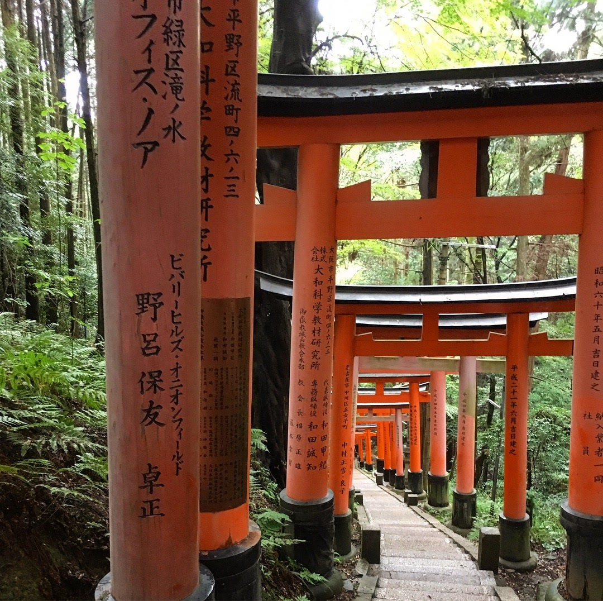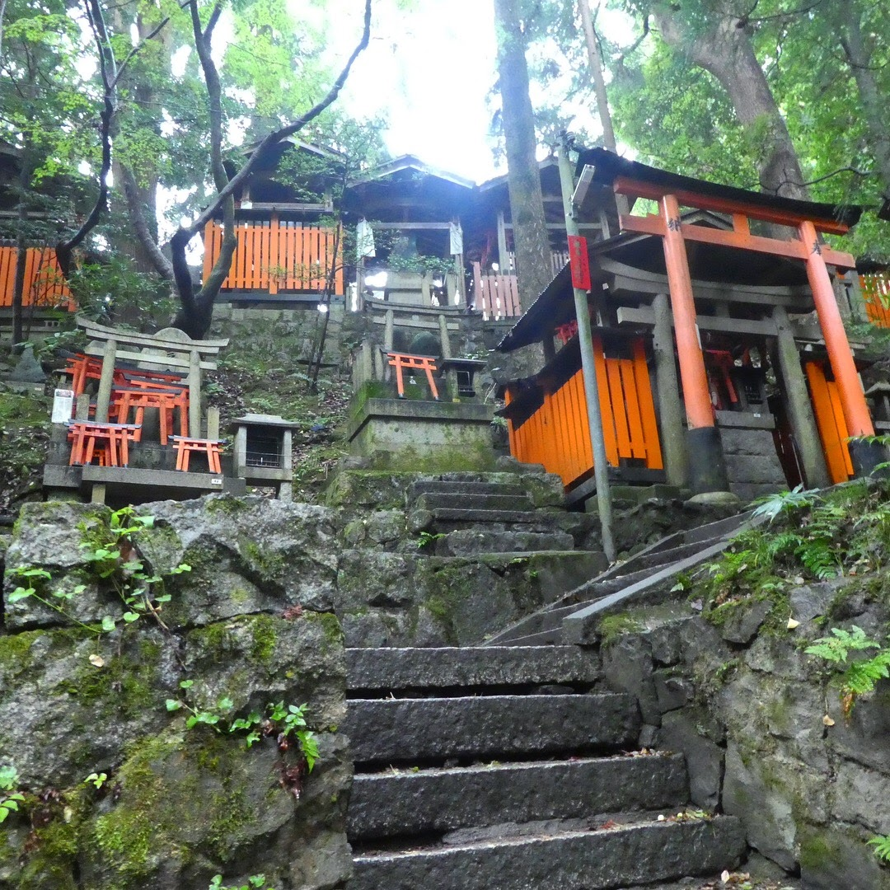
- Nara Deer Park: It’s a park teeming with deer. You buy a pack of rice crackers for 100yen from one of the vendors to feed the deer. Please, please feed them anything else and don’t leave trash for them to ingest. Most of the deer know they have to bow to you before they can receive a piece of the rice cracker! Be prepared to have deer follow you around if you have the crackers in hand.

- Osaka/Dotonburi: I don’t drink but if you like bar hopping and small plates, this is your place! I found the eateries here too crowded and too tourist-heavy for my tastes. We opted for a mom&pop okonomiyaki shop for our dinner. There’s also the famous Glico Man for you to take a picture of.
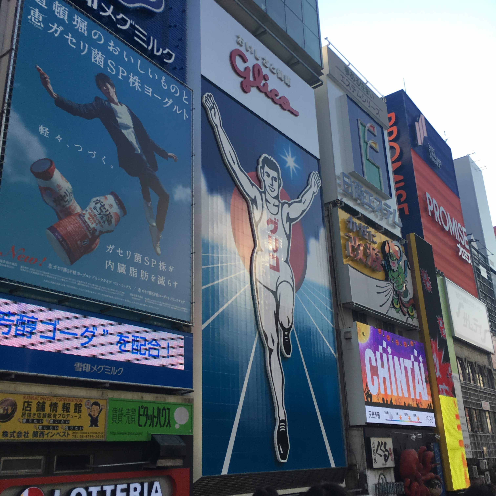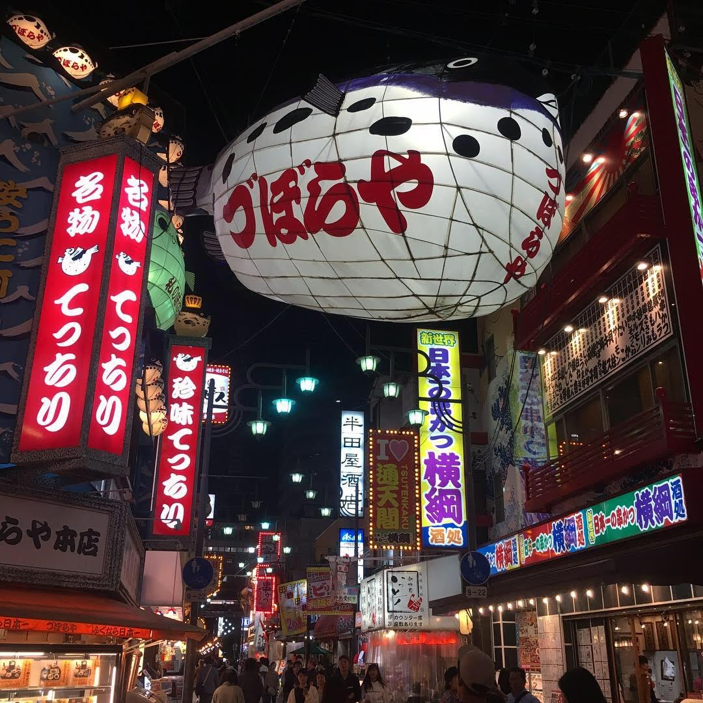
- International Manga Museum: Recommended by a professor at UCSD, this is quite a fun place to explore if you’re into manga. When we went, they had special exhibits for Natsume Yuuinchou and Peacemaker Kurogane. Other cool things include sculptures of the drawing hand of popular mangaka and walls lined with probably every manga ever published. The gift store also sells manga from other countries like Taiwan and Germany.
- Uji: Home of green tea! It’s situated between Kyoto and Nara. Here, you can visit the Byoudoin Temple (which can also be found in Hawaii!) and try all the green tea-based dishes and desserts.
Jump to specific sections: Top, Basics, Tokyo, Hakone, Wakayama
Hakone
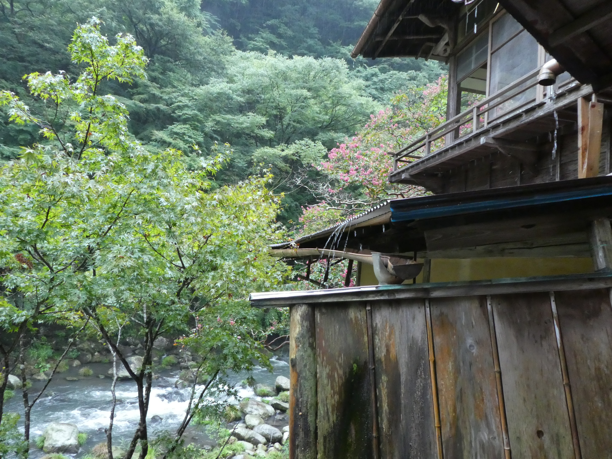Hakone is a great place to stay at a ryokan (traditional Japanese inn) with an onsen, and we stopped by here specifically for that reason. When we went, it was raining pretty hard, so we didn’t go outside much in the one night we spent here. Before checking out of the ryokan, we got a chance to walk around the town a bit. We visited a souvenir store that sold various types of soybean snacks and had plenty of samples throughout the store.
A ryokan (旅館) is essentially the hot springs resorts you see in anime. They often have hot spring baths and provide you with yukatas to wear after the bath. A kaiseki-style dinner and breakfast are often served to you by one of the inn ladies. The meals are made with local and seasonal ingredients. The interior can range from traditional tatami mats with futons or more Western-style with beds. Baths are often communal and separated by gender. Some inns also offer private bathing rooms for more private individuals/groups.
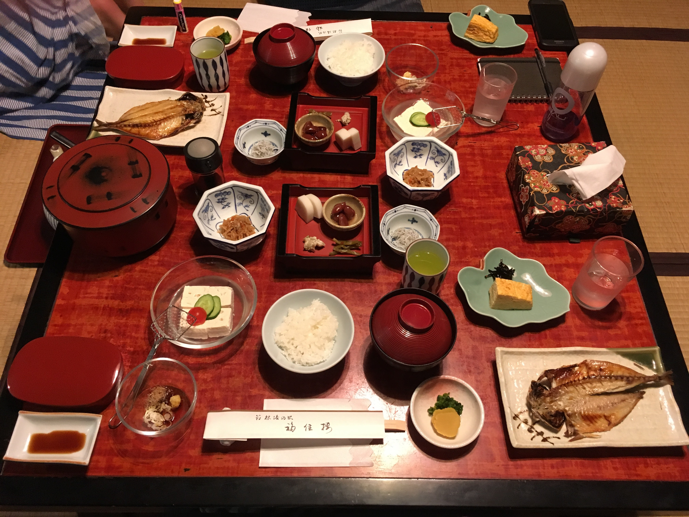Fukuzumiro Ryokan
We booked this ryokan online after I scoured booking.com and tripadvisor for highly rated, yet more affordable lodgings. I’m assuming that most ryokan you find on those sites can communicate in English. The staff at Fukuzumiro was very accommodating and kind. They explained the bathing and meal schedule clearly and mostly left us to our own devices. This particular ryokan could accomodate my eating preferences (pescatarian). I’d recommend contacting the inn ahead of time to notify them of any dietary restrictions/allergies. The meals were delicious and creative! Sometimes, we couldn’t figure out what a particular ingredient was, but the taste was always on-point.
I was grateful that this inn had a private bath, since I’m still a little awkward about being butt-naked with a bunch of strangers. Public baths, however, are common in Japan so it’s not really meant to be awkward. I’m a foreigner leave me alone. The futons were set up by the inn lady while we had dinner. It was an interesting experience to sleep on the floor on the plush bedding. We ended the night watching a Japanese crime film on tv, somehow piecing together the plotline. It was a relaxing stop overall and I would stay here again!
Jump to specific sections: Top, Basics, Tokyo, Kansai Area, Wakayama
Wakayama
It was accidental that we ended up staying in Wakayama, specifically Kimiidera. I didn’t pay enough attention when booking this Airbnb so I wasn’t aware of how far it was from Kyoto and Osaka. No regrets staying in this beautiful suburb though. The city was small, for sure, but definitely not rural. It seems like an area that people grow up in and retire in. There were grocery stores, temples, and a huge pachinko parlor. The air was fresh and the weather was not unlike San Diego. The town was great for bike riding (our Airbnb had ones we could use) and the vibe is pretty chill and relaxing. If you’re looking for a more local experience of Japan with a little bit of natural beauty and close proximity to touristy spots, Kimiidera is a great choice.
The larger, seaside city of Wakayama is two train stops from Kimiidera, but it’s also a bikeable distance with a scenic route along the sea. There, you’ll find more touristy, picturesque spots like the Porto Europa theme park. This area is also known for mikan oranges and peaches so there were plenty of mikan based desserts and drinks at the little fruits village.
Fun Places
- Wakayama Marina City: For lunch one day, we stopped by the Kuroshio Market for a fresh seafood dish. I opted for a bowl of mackerel udon and tuna croquette. We ate our meal by the sea and people-watched. After, we went to the Europe-themed Porto Europa to take some cute pictures. I’ve never been to Europe, but I think this park offered an aesthetic rendition of Europe-esque structures. The park is free to go into, though you have to pay for the rides. At Kinokuni Fruit Village, we perused the variety of peach and mikan-themed snacks. I’d recommend trying the fresh fruit slushes there as well as the local fruit sold!
- Kimiidera Temple: A nice temple sitting atop a flight of stairs. It offers a great view of the city and there are guidebooks in English as well. We also stumbled upon a random temple while biking around, though it wasn’t staffed or maintained.
- Dolce e Caffe Arancia: From this cafe, I learned that arancia is a citrus fruit that’s a cross between a pomelo and a mandarin. We stopped by this cute cafe for a sweet treat on the way back from Marina City. The interior is cutely decorated in a Western-style with nice views from the window. Cafes like this are a bit pricier but the presentation and flavor makes it acceptable as an occasional treat.
Jump to specific sections: Top, Basics, Tokyo, Kansai Area, Hakone
Overall
My admiration for Japan is pretty obvious and I won’t continue to bore you with more words. I hope this post helps you explore some of the lesser-known attractions in Japan, and reassure you that Japan is not an overly extravagant vacation spot. If you have any questions, don’t hesitate to contact me or Warren (:
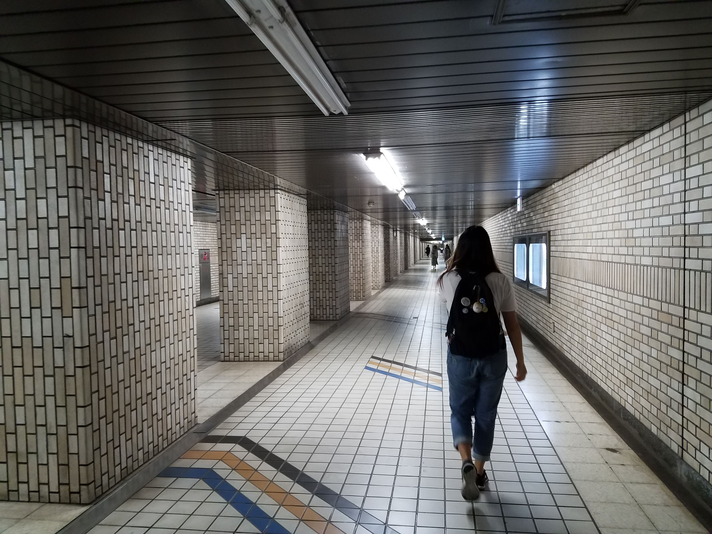Back to Top ↺